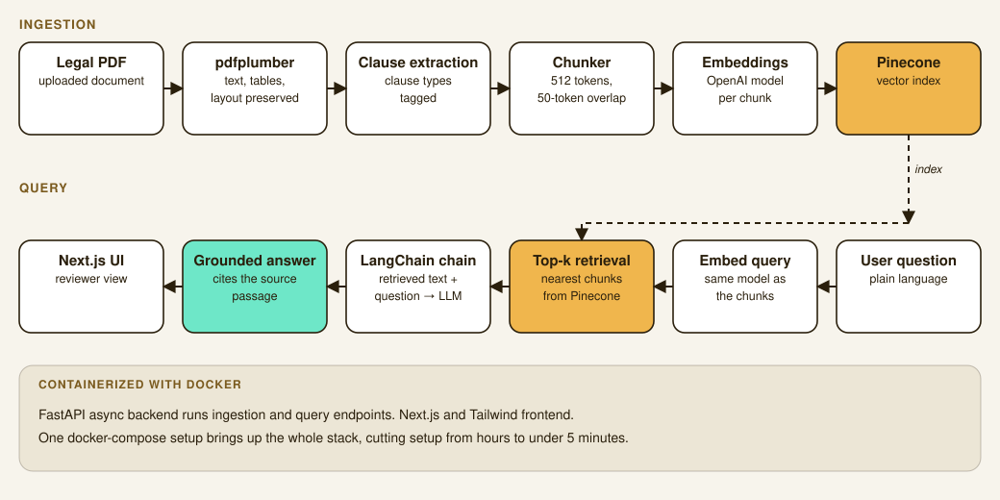

DocuMind AI: a RAG pipeline for automated legal document review
An end-to-end retrieval-augmented generation system that reads, chunks, and semantically indexes legal documents, then serves grounded answers through a containerized full-stack app.
Overview
Reviewing legal documents by hand is slow, repetitive, and error prone. The same clauses get re-read across hundreds of contracts. DocuMind AI is a document-review assistant that ingests legal PDFs, extracts their structure, and lets a reviewer ask questions against the document in natural language, with every answer grounded in the source text.
I built the whole system solo. That covers PDF ingestion and clause extraction, the embedding and retrieval layer, the FastAPI backend, and a Next.js frontend, then containerizing the entire stack so it spins up in minutes instead of hours.

Ingestion & structure extraction
Legal PDFs aren't plain text. Clauses, defined terms, and tables all carry meaning in their structure. I used pdfplumber to parse documents while preserving that structure, running structured clause extraction and table parsing so downstream retrieval doesn't lose context that a naive text dump would flatten.
- PDF ingestion with pdfplumber, preserving clause boundaries and table layout.
- Structured extraction pass to tag clause types before chunking.
- Output normalized into a consistent schema the embedding layer can consume.
Embedding & retrieval
Documents are chunked into 512-token windows with a 50-token overlap to avoid splitting clauses mid-thought, embedded with OpenAI's text embedding models, and stored in Pinecone for fast approximate nearest-neighbor search. LangChain orchestrates the retrieval chain, pulling the most relevant chunks for a query before they get passed to the generation step.
Delivery & deployment
The backend is an async FastAPI service exposing the ingestion and query endpoints. The frontend is a Next.js app styled with Tailwind CSS. The whole thing, API, vector store client, and frontend, is containerized with Docker, so a fresh environment goes from clone to running in under five minutes instead of the hours it used to take to wire up manually.
Impact
- Cut the manual review loop down to a natural-language query against the actual source document.
- 92% retrieval accuracy on benchmark queries, validating the chunking and embedding strategy.
- Environment setup time dropped from hours to under 5 minutes once the stack was containerized.